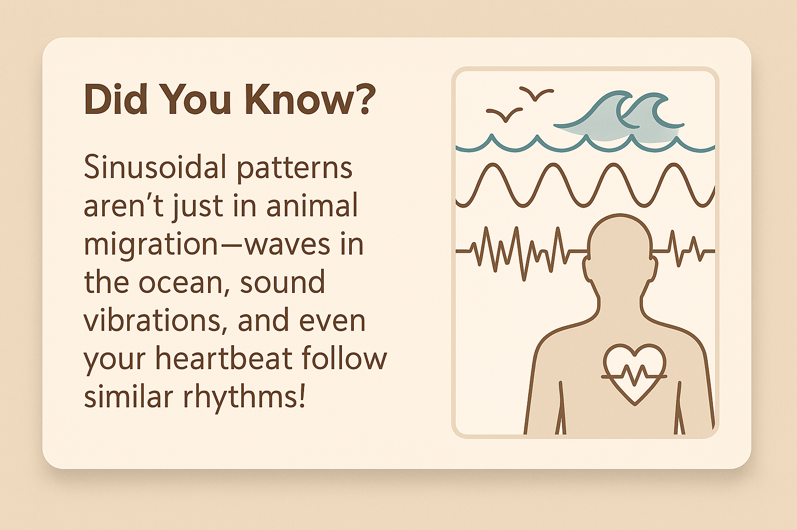

Sinusoidal Functions in Nature
Discover how mathematical waves explain natural movement patterns like migration.
Understanding Sinusoidal Functions
Sinusoidal functions help us model periodic behavior, like animal migrations that occur annually or seasonally.
Key Concepts
- Amplitude: Represents how far the animal travels.
- Frequency: How often the animal migrates.
- Phase Shift: When the migration starts.
Interactive Graph
Use the sliders to simulate different migration styles:

Real-Life Examples
- Caribou – Large amplitude, migrate long distances
- Monarch Butterflies – High frequency, multi-generational migration